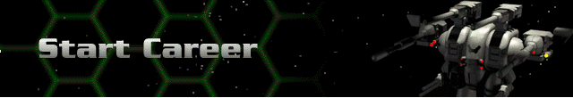
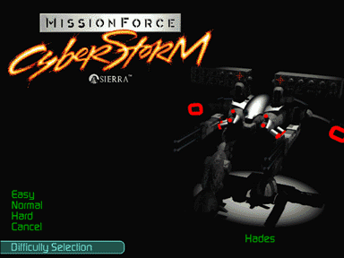

› |
› |
› |
Start Career |

Displays choices for difficulty levels. After choosing your difficulty setting, you are then prompted whether or not you want to Quick Start your career. Choosing Yes bypasses any set-up options and takes you right into battle. Choosing No takes you into the Herc Base menu where you choose among several career options.
